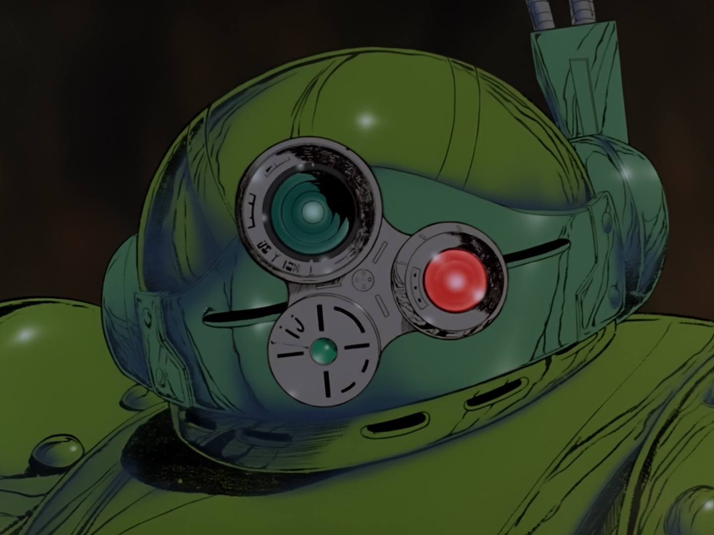
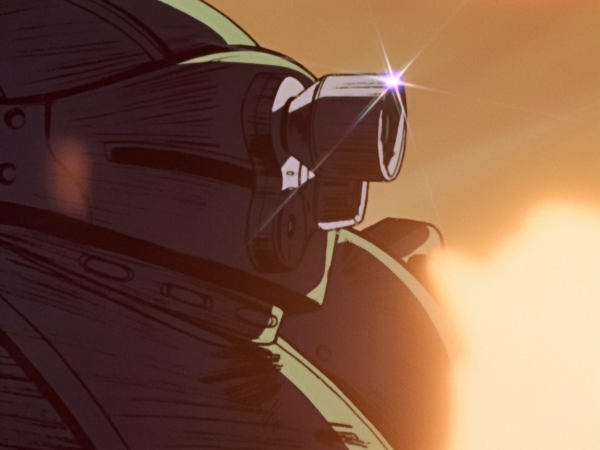
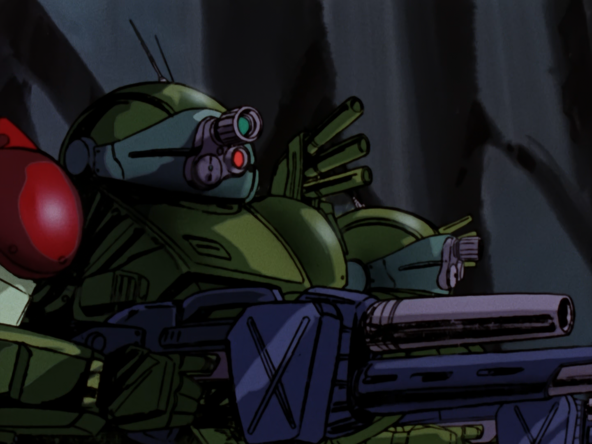
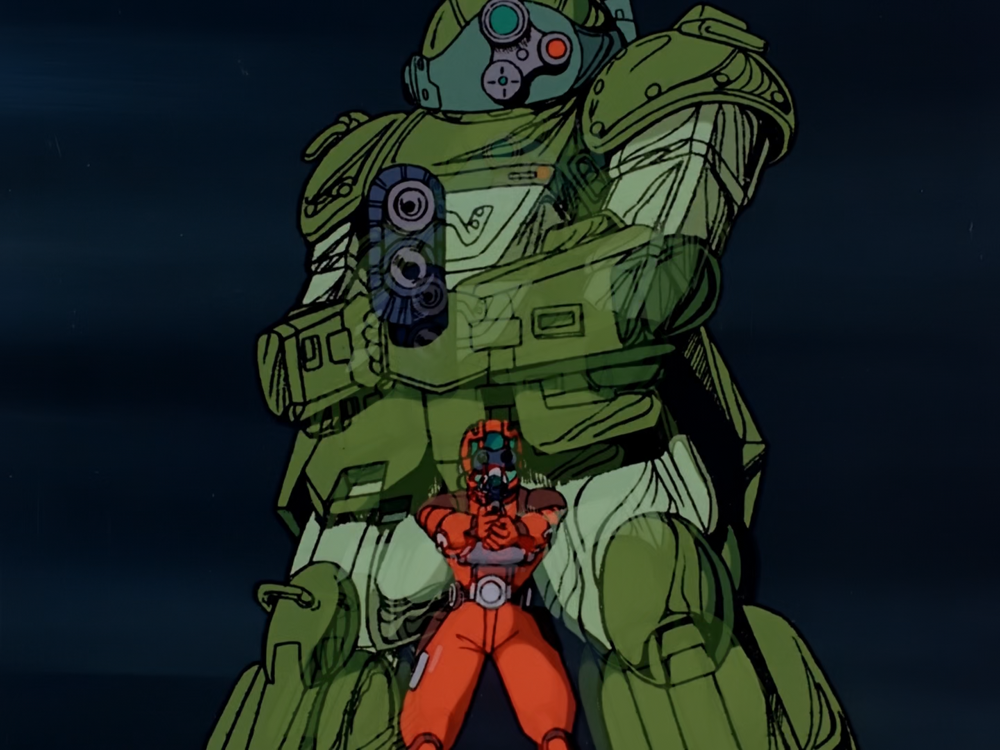
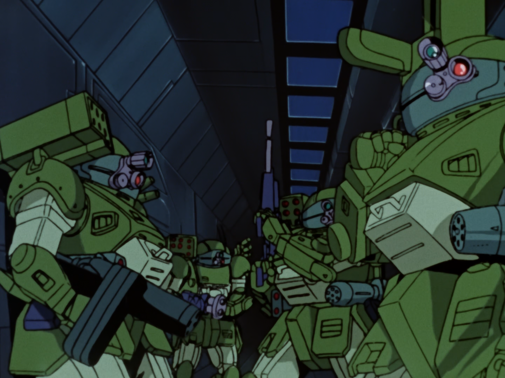
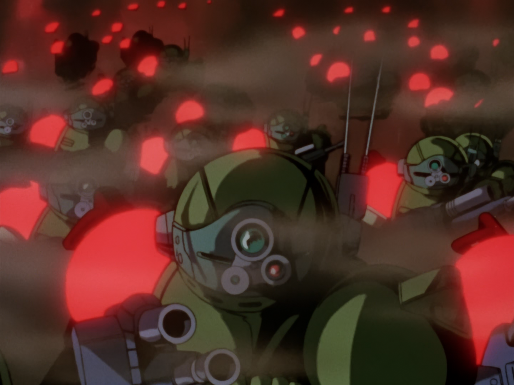

The images below are from the TV Series ARMORED TROOPER VOTOMS and the interquel and prequel OVAs THE LAST RED SHOULDER and ROOTS OF AMBITION.
The series was first released in Japan in 1983 and was directed by Ryosuke Takahashi of Studio Sunrise.





